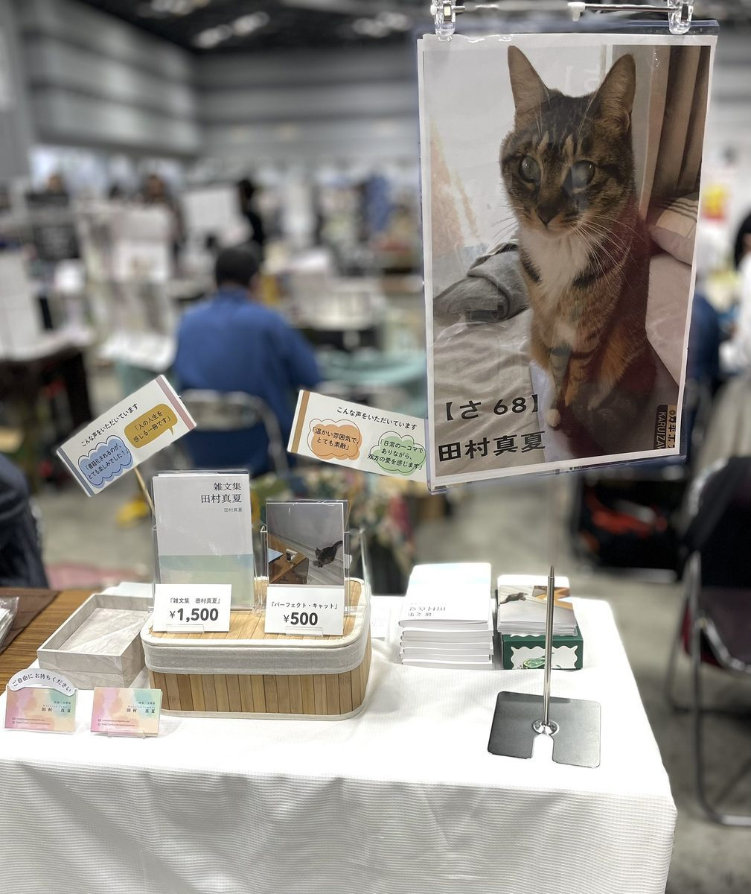
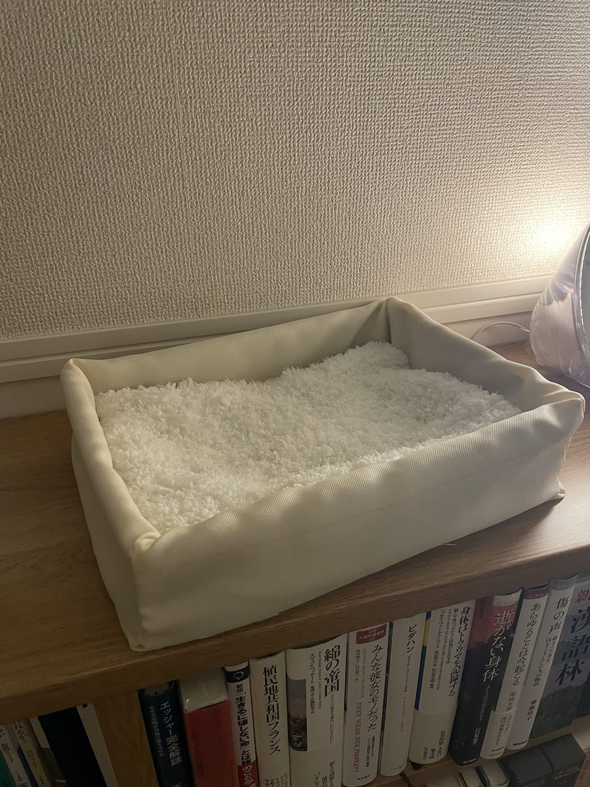
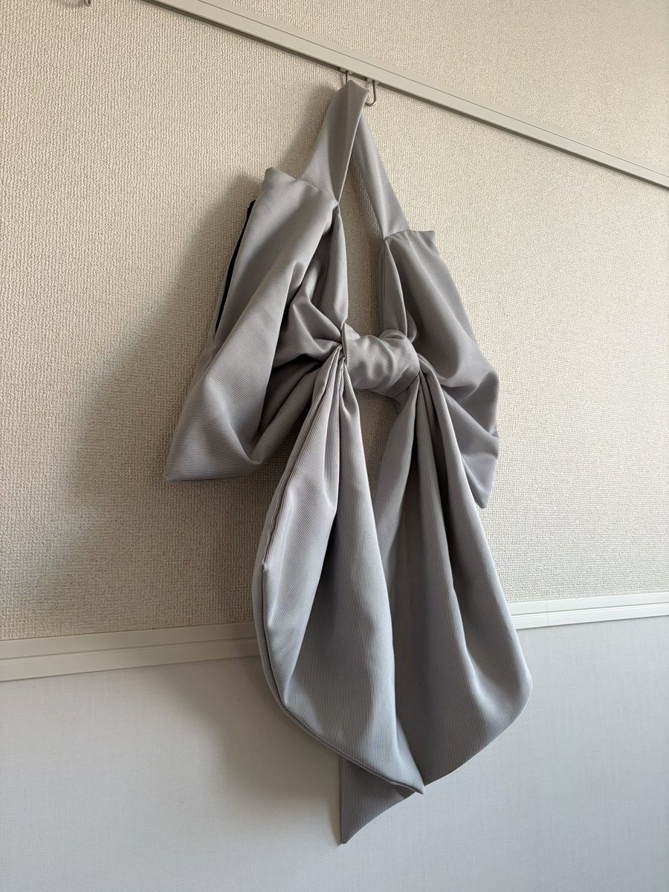

数ヶ月前、妹から「出先でもんぺの型紙が売られているのを見つけた」と連絡を受けた。今、もんぺ？ と思ったが、事実だった。型紙の販売会社をインターネットで調べると、いかにもデザインに金をかけていそうな、洒脱な雰囲気の会社がそこに見つかった。型紙だけでなく、実際にもんぺを作って販売もしているらしい。しかも妹曰く、3,4年ほど前からじわじわ流行ってきているとのことだった。もんぺを今の時代にまた流通させたい会社があるのか。もんぺが戦時中の標準服として推奨されていた事実とどう折り合いをつけているのだろう…… その日のやりとりは、おおむねそんなことを考えているうちに終わった。
そこからしばらく経って、裁縫をしているとき、ふとその時の妹との連絡のやり取りを思い出した。「今アップサイクルが流行っている」と、もんぺの話が終わるくらいのタイミングでそんなことを言っていた。それからわたしは自分がボーッと眺めている動画のタイトルを、改めて見やった。「my small upcycling business」…… Oh my gosh! わたしは無意識のままに、アップサイクルをビジネスにしている人の動画を観ていた。
「アップサイクル」の厳密な定義があるのかどうかは知らないが、わたしのおおむねの理解はこうだ――ゴミに手を加えて、より良いものにすること。わたしは秋ごろから英語圏の裁縫Vlogをよく観ている。そしてそういうものの中には、「ゴミに手を加えてよりよくした」というようなことを言っている人がたくさんいるのだ。たとえばその人たちの中には、リサイクルショップに行って中古のシーツやテーブルクロスを買い、それを裁断してドレスや小物を作っている人がいる。フリーマーケットでTシャツを買ってきて、それを自分のサイズに合わせて着ている人がいる。それが上手にできる人は、ハンドメイド作品として販売していることもある。これらはすべてアップサイクルであるが、わざわざ「アップサイクル」という単語を使っていない人も多い。わたしはすっかりその文化に馴染んでいたのに、数ヶ月前に妹が話していた「アップサイクルが流行っている」に意識が向かうことはそれまでなかった。それほど自然なことだったのだ。
いっぽう、日本の裁縫や編み物の情報を集めると、糸や布は新品のものを使っていることが多い。布は「あまり布」とか「ハギレ」とか呼ばれていて、一般的な素材とは一線を画している印象がある。本もぜんぜんないし、Googleで検索してもあまりヒットしない。毎日のようにInstagramにはユニクロの新作レビューが流れてくる。大量生産、大量消費だ。たくさんのものを買い、たくさんのものを着る。たくさん捨てて、またたくさん買う。そういう生活様式にどうやらわたしはあまり馴染めないらしい。そういうわけで、「ゴミを自分のものに変える」アップサイクルに惹かれているわけだ。
今わたしがアップサイクルとして今取り組んでいるのは、主に廃棄する予定のカーテンを他のものにすることだ。まず、カーテンをテーブルクロスへ。これはとても簡単だった。カーテンレール用につけられていた部分を切り取り、端処理をし、机に敷くだけだ。滑り止めにはシリコンテープを使った。文学フリマに出展した際のクロスとして、大変役に立ってくれた。こういう即売会には防炎加工がしてあるものを使用したほうがいいと聞く。万事に備えるためだ。だから、防炎加工済みのカーテンをアップサイクルしたのは適任だったと思う。

これに味を占めたわたしは、様々な端材を探し求めることにした。あるとき、カーテンを商材としている会社が破棄する品を余らせているという話を聞いたので、その会社に連絡し、それらを大量に段ボールに詰めて自宅に持ち帰ってきた。かなりしっかりとした加工がされていて、服に使うことは難しそうだが、小物などには十分活用できそうだった。そこでわたしはふたつ作った。猫用のベッドと、リボン型の巨大バッグだ。


猫ベッドは毎日子猫が使ってくれているし、リボン型バッグは「私にも作ってほしい！」と人から依頼を受けるほど好評だった。人が「ゴミ」だと判断しているもので、これだけのものが作れるのは嬉しい。しかも特別難しいことでもない。パッチワークやキルティング加工の仕方を覚えれば、もっと使えるケースが増えるだろう。羊毛100%のセーターを石鹸を含めた液で縮めていくとフェルトとなり、それで手袋を作ったり小物を作ったりすることもできるらしい。可能性は無限にあり、その選択肢にわたしのこころは踊らされる。
妹は「アップサイクル、きてるよ」と言っていたが、実際のところまだ日本にはそこまで浸透していない言葉なのかもしれない、と、実際にいろいろな端材や素材を集めていて感じた。世はSDGs時代。たくさんの古着や、対して使われていない布がたくさんこの世には余っている。それをちょっとずつ集めて、加工して、新しいものにしていきたい。わたしはアップサイクルが大好きだ。
蛇足：もしこれを読んでいる人の中で、「服が余っているんだけど寄付するのも売るのも面倒だし、困っている」という方がいたら、ぜひわたしに連絡をください。状態を確認した上で、お引き取りしたく思います。お問い合わせフォーム（こちら）をご利用ください。
こういう文章を集めた本『Knitting＆Sewing』を制作中です。応援よろしくお願いします。